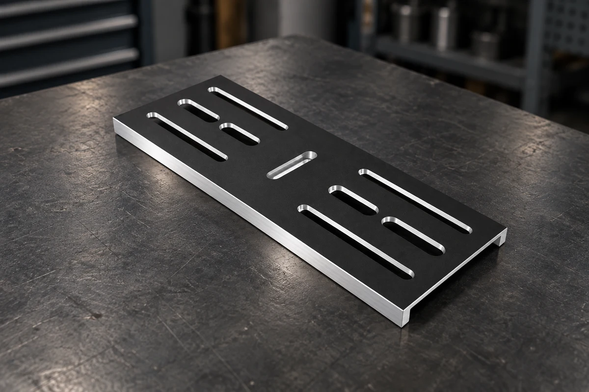

CNC Setup SheetSETUP-TAC-001REV A · SIDE 1 / 2
Fusion-aligned production setup
Tac Table
Opspænding, værktøjer, WCS og operationsrækkefølge til CNC-fræsning på Haas Mini Mill.
Mål efter bearbejdning230 × 89 × 10 mm
Dokument-IDSETUP-TAC-001
RevisionA
Udstedt06.10.2026
StatusFrigivet
NC-programO8001
MaskineHaas Mini Mill
MaterialeEN AW-6082-T6
Råemne250 × 112 × 30 mm
Opspænding
Maskinskruestik 200 mmOpspændingsprincip
- Bakker
- Hårde bakker med skiftende parallelklodser.
- OP1–OP3
- Stabil indspænding med fokus på fuld understøtning.
- OP4–OP5
- Genopspænd med reduceret moment før sletspån for at begrænse deformation i den tynde plade.
- Før vending
- Rens bakker, parallelklodser og anlægsflader for spåner.

Værktøjsliste
Tool data| T# | Beskrivelse | Udhæng | Fløjter | Primær funktion |
|---|---|---|---|---|
| T1 | Planfræser Ø44 mm · HM | 30 mm | 4 | Facing af top |
| T2 | Pindfræser Ø8 mm · HM Alu | 25 mm | 3 | Adaptive skrub / 3D Flat |
| T3 | Spotdrill Ø8 mm · HSS | 20 mm | 2 | 0,2 mm chamfer |
| T4 | Pindfræser Ø4 mm · HSS | 20 mm | 3 | Indvendige spor |
| T5 | Pindfræser Ø10 mm · HSS | 35 mm | 4 | Sletspån omrids |